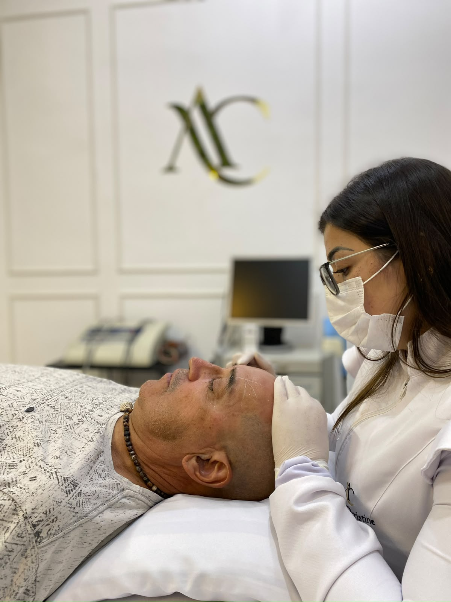
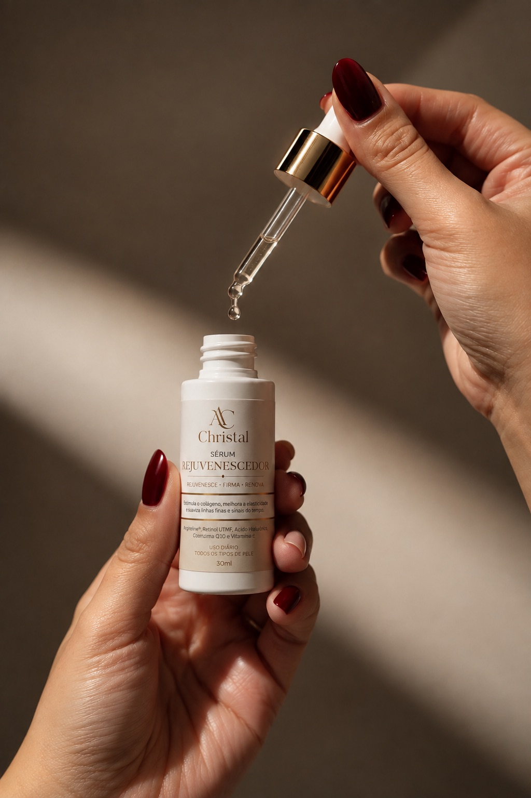
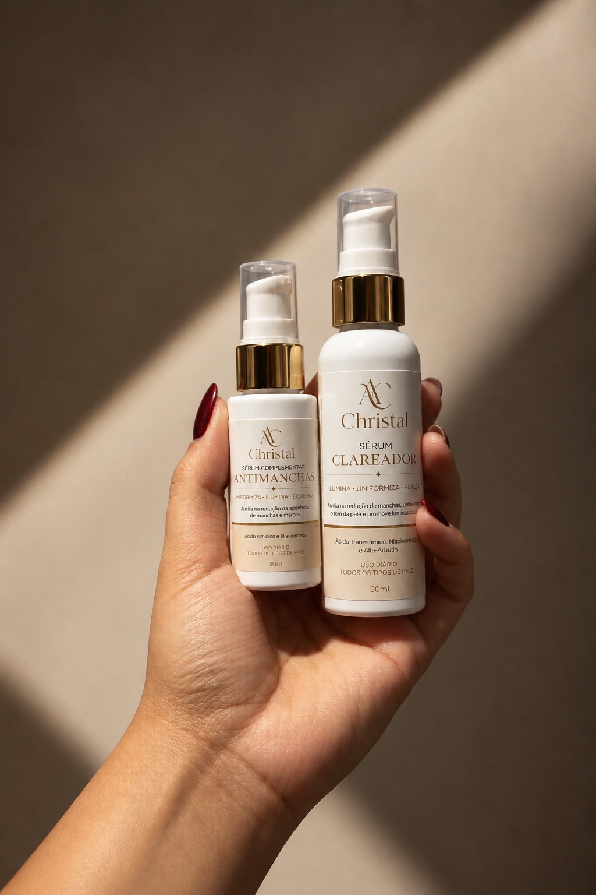
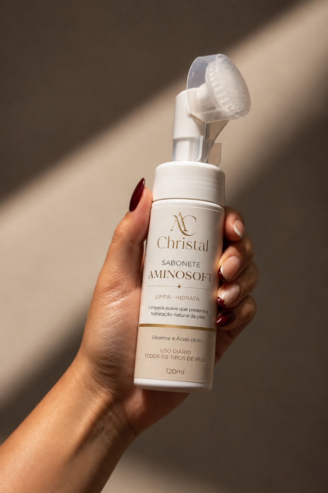
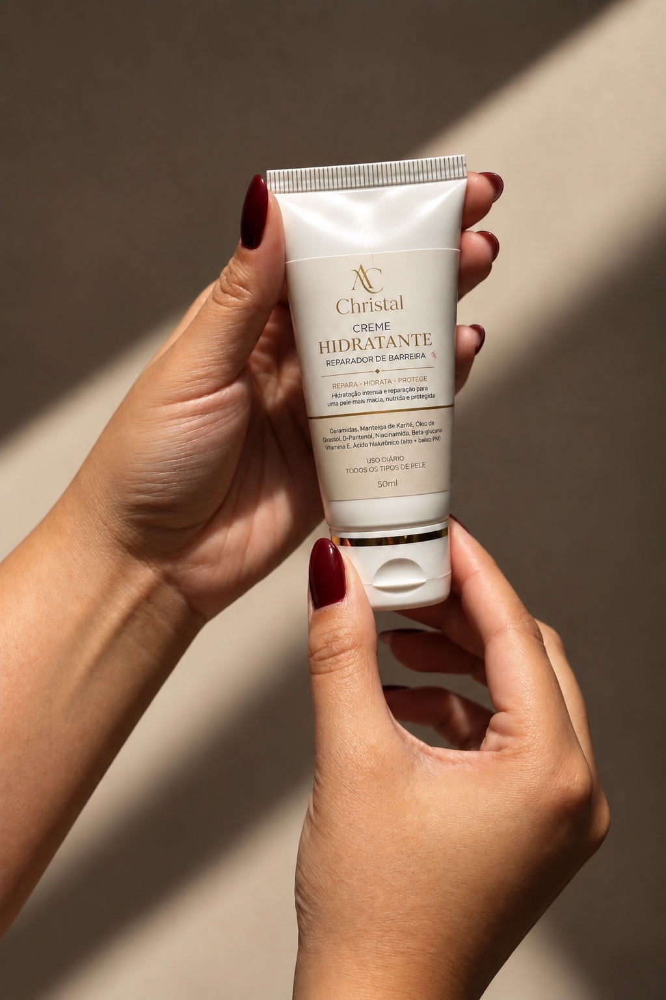
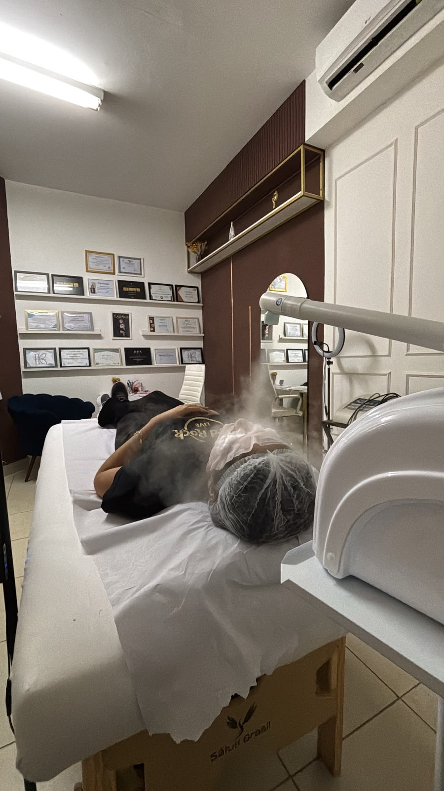

Clínica de Estética & Linha de Skincare
Harmonização facial, bioestimuladores e protocolos avançados de pele, aliados à nossa própria linha de skincare, formulada para prolongar o resultado de cada tratamento em casa.

Sobre a Christal Clinic
Cada protocolo começa com escuta: entender a rotina, a expectativa e a anatomia de quem está diante de nós.
"Só avançamos para a técnica depois de entender, de fato, o que cada paciente busca."
Trabalhamos com produtos de procedência certificada, técnicas atualizadas e uma linha própria de skincare, para que o cuidado continue muito depois da sessão.
Tratamentos
Da harmonização facial aos cuidados corporais, cada procedimento é ajustado à sua pele e à sua rotina.
Suaviza linhas de expressão com dosagem precisa e resultado natural, sem perder a expressividade do rosto.
Estimulam a produção natural de colágeno para firmeza e resultados que evoluem ao longo do tempo.
Protocolos de limpeza e cuidado feitos com a linha Christal, formulada pela clínica e pensada para cada tipo de pele.
Drenagem linfática, vapor e protocolos redutores para conforto, contorno e bem-estar.
Tecnologia avançada para firmeza, rejuvenescimento e uniformidade da pele.
Linha Christal
Formulada para prolongar em casa o resultado dos protocolos feitos aqui, do sérum ao hidratante final.

Estimula o colágeno, melhora a elasticidade e suaviza linhas finas e sinais do tempo.
Ativos: Argireline®, Retinol UTMF, Ácido Hialurônico, Coenzima Q10 e Vitamina E.

Auxilia na redução de manchas, uniformiza o tom da pele e promove luminosidade.
Ativos: Ácido Tranexâmico, Niacinamida, Alfa-Arbutin e Ácido Azelaico.

Limpeza suave que preserva a hidratação natural da pele, com escova facial acoplada.
Ativos: Glicerina e Ácido Cítrico.

Hidratação intensa e reparação para uma pele mais macia, nutrida e protegida.
Ativos: Ceramidas, Manteiga de Karité, D-Pantenol, Niacinamida e Ácido Hialurônico.

A Clínica
Do acolhimento à técnica: ambiente equipado e climatizado para o seu conforto durante todo o protocolo.
Confiança
Nossa equipe mantém-se em atualização constante, com certificações reconhecidas nas técnicas mais avançadas do mercado.
Agende sua avaliação
Conte-nos o que você gostaria de cuidar. Retornamos com os melhores horários disponíveis.
Falar no WhatsAppEndereço
R. Rota dos Imigrantes, 425, sala 116 · Holambra, SP
Telefone
(19) 99995-0829
Horário
Seg. a Sáb. · 09h às 19h
@clinica_christal